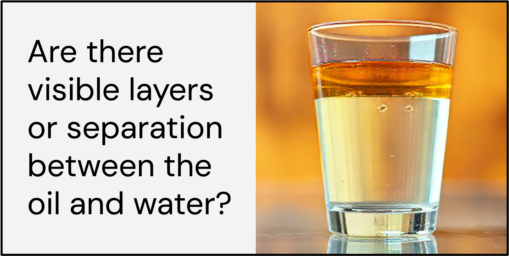

Commonsense Inferences
Method:
Example:
 Click the underlined text for dropdown menu
Click the underlined text for dropdown menu

We evaluate our method on CommonsenseT2I, a benchmark for commonsense understanding. For each example, we show an automatically generated question used by our method to verify an inference, as well as the image it generated. We also compare against prompt expansion and vanilla prompting.